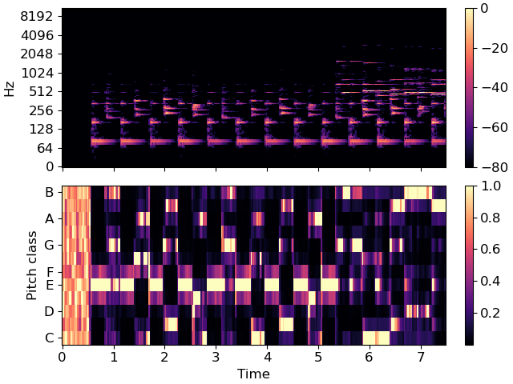

Caution
You're reading an old version of this documentation. If you want up-to-date information, please have a look at 0.9.1.
librosa.feature.chroma_stft¶
- librosa.feature.chroma_stft(*, y=None, sr=22050, S=None, norm=inf, n_fft=2048, hop_length=512, win_length=None, window='hann', center=True, pad_mode='constant', tuning=None, n_chroma=12, **kwargs)[source]¶
Compute a chromagram from a waveform or power spectrogram.
This implementation is derived from
chromagram_E1- 1
Ellis, Daniel P.W. “Chroma feature analysis and synthesis” 2007/04/21 http://labrosa.ee.columbia.edu/matlab/chroma-ansyn/
- Parameters
- ynp.ndarray [shape=(…, n)] or None
audio time series. Multi-channel is supported.
- srnumber > 0 [scalar]
sampling rate of
y- Snp.ndarray [shape=(…, d, t)] or None
power spectrogram
- normfloat or None
Column-wise normalization. See
librosa.util.normalizefor details.If None, no normalization is performed.
- n_fftint > 0 [scalar]
FFT window size if provided
y, srinstead ofS- hop_lengthint > 0 [scalar]
hop length if provided
y, srinstead ofS- win_lengthint <= n_fft [scalar]
Each frame of audio is windowed by window(). The window will be of length win_length and then padded with zeros to match
n_fft.If unspecified, defaults to
win_length = n_fft.- windowstring, tuple, number, function, or np.ndarray [shape=(n_fft,)]
a window specification (string, tuple, or number); see
scipy.signal.get_windowa window function, such as
scipy.signal.windows.hanna vector or array of length
n_fft
- centerboolean
If True, the signal
yis padded so that frametis centered aty[t * hop_length].If False, then frame
tbegins aty[t * hop_length]
- pad_modestring
If
center=True, the padding mode to use at the edges of the signal. By default, STFT uses zero padding.- tuningfloat [scalar] or None.
Deviation from A440 tuning in fractional chroma bins. If None, it is automatically estimated.
- n_chromaint > 0 [scalar]
Number of chroma bins to produce (12 by default).
- **kwargsadditional keyword arguments
Arguments to parameterize chroma filters. See
librosa.filters.chromafor details.
- Returns
- chromagramnp.ndarray [shape=(…, n_chroma, t)]
Normalized energy for each chroma bin at each frame.
See also
librosa.filters.chromaChroma filter bank construction
librosa.util.normalizeVector normalization
Examples
>>> y, sr = librosa.load(librosa.ex('nutcracker'), duration=15) >>> librosa.feature.chroma_stft(y=y, sr=sr) array([[1. , 0.962, ..., 0.143, 0.278], [0.688, 0.745, ..., 0.103, 0.162], ..., [0.468, 0.598, ..., 0.18 , 0.342], [0.681, 0.702, ..., 0.553, 1. ]], dtype=float32)
Use an energy (magnitude) spectrum instead of power spectrogram
>>> S = np.abs(librosa.stft(y)) >>> chroma = librosa.feature.chroma_stft(S=S, sr=sr) >>> chroma array([[1. , 0.973, ..., 0.527, 0.569], [0.774, 0.81 , ..., 0.518, 0.506], ..., [0.624, 0.73 , ..., 0.611, 0.644], [0.766, 0.822, ..., 0.92 , 1. ]], dtype=float32)
Use a pre-computed power spectrogram with a larger frame
>>> S = np.abs(librosa.stft(y, n_fft=4096))**2 >>> chroma = librosa.feature.chroma_stft(S=S, sr=sr) >>> chroma array([[0.994, 0.873, ..., 0.169, 0.227], [0.735, 0.64 , ..., 0.141, 0.135], ..., [0.6 , 0.937, ..., 0.214, 0.257], [0.743, 0.937, ..., 0.684, 0.815]], dtype=float32)
>>> import matplotlib.pyplot as plt >>> fig, ax = plt.subplots(nrows=2, sharex=True) >>> img = librosa.display.specshow(librosa.amplitude_to_db(S, ref=np.max), ... y_axis='log', x_axis='time', ax=ax[0]) >>> fig.colorbar(img, ax=[ax[0]]) >>> ax[0].label_outer() >>> img = librosa.display.specshow(chroma, y_axis='chroma', x_axis='time', ax=ax[1]) >>> fig.colorbar(img, ax=[ax[1]])
